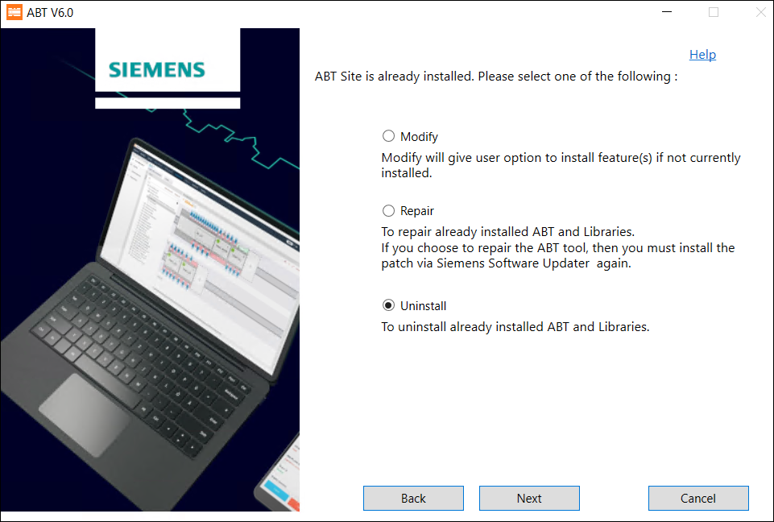

卸载
您可以使用 ABT 安装程序中的卸载选项卸载 ABT 站点和 ABT Pro。请完成以下步骤来卸载 ABT Pro 和 ABT Site：
- In welcome ABT Installer’s welcome dialog box select the language of your choice and click Next.
Note: The language you select here is for ABT Installer only and not the ABT Pro or Site product language. - Select Uninstall to uninstall ABT Site from your machine and click Next.

- Select the feature that you want to uninstall and click Next.
- Verify the features you have selected to uninstall and click Uninstall.
- Select Restart Now and click Restart to restart your machine.
- You have successfully uninstalled ABT Pro and ABT Site on your machine.